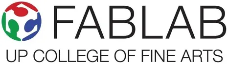

UP-CFA FabLab
UP Diliman – College of Fine Arts · NCR
The UP-CFA FabLab at the University of the Philippines Diliman — College of Fine Arts (CFA) is a digital fabrication laboratory that brings together the creative disciplines of fine arts and design with modern digital manufacturing technology. Located within the CFA campus in Quezon City, the FabLab serves as a maker space and prototyping hub for UP's art, design, and creative students and faculty, listed on the global fablabs.io directory as part of the worldwide Fab Lab network.
- Category
- Fabrication Laboratory (FabLab)
- Host institution
- UP Diliman – College of Fine Arts
- City
- Quezon City
- Region
- NCR
- Operating status
- Operating
About the Center
UP-CFA FabLab occupies a distinctive niche in the Philippine FabLab network — combining the aesthetic and conceptual rigor of fine arts education with digital fabrication capabilities. This intersection makes it a particularly valuable resource for product designers, installation artists, architects, and multidisciplinary innovators who need physical prototyping tools to realize complex creative visions, bridging the gap between artistic concept and tangible form.
As part of UP Diliman's broader innovation infrastructure, the CFA FabLab contributes to a campus-wide ecosystem where artistic, scientific, and entrepreneurial work converge — accessible to UP's creative community and the wider NCR innovation ecosystem.
Programs & Services
- 3D Printing — Additive manufacturing for artistic prototypes, design models, sculptural works, and product development projects
- Laser Cutting & Engraving — Precision laser processing of wood, acrylic, fabric, and other materials for fine art, design, and product applications
- CNC Milling/Routing — Computer-controlled fabrication for complex sculptural forms, architectural models, and custom components
- Vinyl Cutting — Digital cutting for graphic art, installation elements, signage, and design applications
- 3D Scanning — Dimensional scanning for digital capture of physical artworks, objects, and design references
- CAD Workstations — Digital design facilities for art, product design, and technical drawing
- Open Fabrication Access — Services available to CFA students, UP researchers, and creative practitioners in the NCR innovation ecosystem
Contact
Sources & references
- cfa.upd.edu.ph/cfa-life/up-fab-lab
- fablabs.io/labs/upcfafablab
- dti.gov.ph/negosyo/shared-service-facilities/fabrication-laboratories
Details are drawn from public records and the sources above, July 2026.
Startupreneur Innovation Hub · synced from the Notion catalog (July 2026) · status: published.